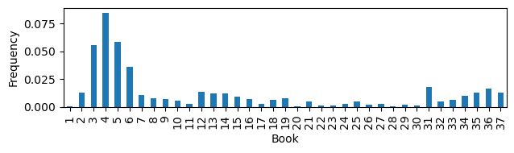
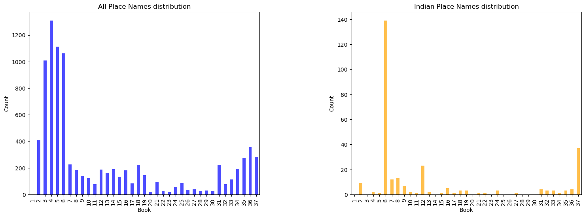

| Total_length | Place_count | Place_freq | |
|---|---|---|---|
| Book | |||
| 1 | 2778 | 1 | 0.000360 |
| 2 | 30570 | 406 | 0.013281 |
| 3 | 18037 | 1007 | 0.055830 |
| 4 | 15434 | 1309 | 0.084813 |
| 5 | 18872 | 1112 | 0.058923 |
| 6 | 27890 | 1012 | 0.036285 |
| 7 | 21204 | 225 | 0.010611 |
| 8 | 24176 | 185 | 0.007652 |
| 9 | 19197 | 140 | 0.007293 |
| 10 | 20816 | 121 | 0.005813 |
| 11 | 27345 | 77 | 0.002816 |
| 12 | 13906 | 188 | 0.013519 |
| 13 | 13243 | 164 | 0.012384 |
| 14 | 15277 | 189 | 0.012372 |
| 15 | 14552 | 135 | 0.009277 |
| 16 | 25442 | 180 | 0.007075 |
| 17 | 29387 | 82 | 0.002790 |
| 18 | 35850 | 222 | 0.006192 |
| 19 | 18822 | 146 | 0.007757 |
| 20 | 22743 | 21 | 0.000923 |
| 21 | 17896 | 95 | 0.005308 |
| 22 | 16491 | 24 | 0.001455 |
| 23 | 15764 | 17 | 0.001078 |
| 24 | 17491 | 56 | 0.003202 |
| 25 | 16734 | 85 | 0.005079 |
| 26 | 15448 | 35 | 0.002266 |
| 27 | 12444 | 40 | 0.003214 |
| 28 | 26476 | 28 | 0.001058 |
| 29 | 13976 | 31 | 0.002218 |
| 30 | 14395 | 23 | 0.001598 |
| 31 | 12204 | 222 | 0.018191 |
| 32 | 14635 | 76 | 0.005193 |
| 33 | 17946 | 113 | 0.006297 |
| 34 | 18972 | 193 | 0.010173 |
| 35 | 21282 | 277 | 0.013016 |
| 36 | 21295 | 357 | 0.016764 |
| 37 | 22255 | 282 | 0.012671 |
Mapping the spatial references in Pliny the Elder’s Natural History through distant reading
Abstract
this is an abstract
1 Introduction
1.1 Natural History and its complexity
Pliny the Elder’s Natural History is widely recognized as the earliest encyclopedia in the world, manifesting a pioneering effort in comprehensively cataloging the vast array of human knowledge from that era.
The work is thematically divided into 37 books, covering a diverse range of subjects including astronomy, geography, zoology, botany, medicine, and more. Pliny meticulously consulted a wide range of Greek and Roman references, totaling approximately 2,000 volumes1, and interwove his own literary interpretation or comments to the narratives.
Despite the carefully designed knowledge-ordering framework (Lao 2016), scholars have observed a paradoxical complexity in Natural History, evident in its linguistic style, narrative approach, and use of references. The work compiles inconsistent toponyms from Greek and Latin, includes digressions in descriptions (Roller 2022), exhibits changes in vocabularies and sentence structures (Pinkster 2005). However, it is precisely this complexity that makes the work more fascinating and not only a valuable source to the knowledge and worldview of the ancient world, but also a gateway into Pliny’s conceptualization, imagination, and even the prevailing imperial ideology.
The complexity and interconnectivity of the general structure of Natural History is further highlighted in different aspects by refreshing approaches. In terms of content organization of the work, Healy (1999) vandicated Pliny’s original contribution in unveiling the technology and science engagement of the Rome Empire from the description about natural phenomena and scientific experiment to the development of scientific language in Latin, taking the historical, political and liguistic context into consideration. And Naas (2002) discussed how Pliny formulated the the diversed materials into his encyclopaedic structure, revealing the work’s multifaceted nature as an epistemological, ideological, and moral project. By analysing Pliny’s employment of the historical exemplum in the work, Schultze (2011) argues how the specific literary device directed and teased the readers and established a profound connection between human beings and the entire spectrum of nature in Natural Hisroty.
In addition to the close reading methods used in the prior analyses of the context and references in Natural History, Rydberg-Cox (2021) employs network analysis method with different metrics to map the interrelationships between Pliny’s sources and the topics discussed in the work. Furthermore, Fantoli (2022) presents a comparative study of book 2 of Natural History and book 7 of Seneca’s work Natural Questions, both centered on astronomy, utilizing statistical analysis to identify Pliny’s unique stylistic features based on variations in their discourse distribution, and proved the encyclopedic authorial intent shown in Natural History with AFC and tree analysis. These two studies also demonstrate how distant reading methodologies offer novel insights into the understanding of ancient treatises.
1.2 Spatial perstpective in Natural History
As pointed out by Beagon (2011), differenciating from his pressedors, Pliny showed a “terrestrial curiosity” in Natural History, emphasizing a recognition of the physical, material world. In this regard, the vision of geography plays a pivotal role in distributing information, knowledge, and events throughout Natural History.
Drawing from the long-established topographical and ethnographic traditions, Pliny seamlessly connects volumes dedicated to geography (books 3-6) with broader elements, activities, and cultural, historical, and societal contexts(Roller 2022), exemplified in his portrayal of exotic plants, communities’ habitats, imperial expeditions, and trade ventures. In other words, geographical names occured in each book of Natural History served as signposts guiding readers through diverse lands, shedding light on how Pliny and his contemporaries perceived and conceptualized the world around them.
A normalized frequency of place name occurence in the work is calculated as the ratio of counts of the occurrences of place names in each book to the word lengths of the book (Table 1). The bar chart (Figure 1) depicted the comparison of distribution of place names in the books of Natural History. The observation is in line with content structure of Natural History, that books 3-6 centered around the themes of “Geography and ethnography”, contains the most mentions of location names, and place names are also frequently referred in books about agriculture and horticulture (book 12-14), aquatic life (book 31), and mining and mineralogy (book 34-37).

1.3 Text source for the study
Natural History is originally written in Latin. For the purpose of this study, an English translation conducted by Henry T. Riley (1816-1878) and John Bostock (1773-1846), which was first published in 1855, is utilized. The translated text is obtained in a digitized version from the TOPOSText project, having been sourced from the Perseus Project and governed by a Creative Commons Attribution-Share-Alike 3.0 U.S. License.
Annotations of people’s name, places’ name and geographical coordinates are available together with the text of Natural History (Book1-11, Book12-37) on TOPOSText project. This invaluable resource allows for the creation of a dataset that includes both the textual contents and geographical annotations, which can be utilized to investigate the distribution of place names in the entire text and examine the frequencies and patterns of geography-related content.
The entire text of Natural Histroy has 797821 tokens and 34551 types. And the extracted geography related text contains 2812874 tokens and 28404 types. The workflow of text parsing and dataset creation will be further explained in the Methodology section.
2 Research Question
2.1 Prominent mentioned places in Natural History
Based on the geographical location annotations parsed, there are 2052 unique places mentioned in Natural History.
The top 20 most frequent place names mentioned (as 1% of total) in Natural History is shown in Table 2.
| ToposText_ID | Place_Name | Lat | Long | Count | |
|---|---|---|---|---|---|
| 1687 | https://topostext.org/place/406163RIta | Italy | 40.6 | 16.3 | 292 |
| 2034 | https://topostext.org/place/419125PRom | Rome | 41.891 | 12.486 | 269 |
| 52 | https://topostext.org/place/271307REgy | Egypt | 27.1 | 30.7 | 261 |
| 82 | https://topostext.org/place/300740RInd | India | 30 | 74 | 167 |
| 57 | https://topostext.org/place/280400RAra | Arabia | 28 | 40 | 123 |
| 320 | https://topostext.org/place/355390RSyr | Syria | 35.5 | 39 | 109 |
| 255 | https://topostext.org/place/350330RCyp | Cyprus | 35 | 33 | 85 |
| 109 | https://topostext.org/place/312301WNil | Nile | 30.0918 | 31.2313 | 85 |
| 2282 | https://topostext.org/place/441073LAlp | Alps | 44.142 | 7.343 | 82 |
| 766 | https://topostext.org/place/376145RSic | Sicily | 37.6 | 14.5 | 71 |
| 275 | https://topostext.org/place/352252IKre | Crete | 35.2052 | 25.1836 | 64 |
| 7 | https://topostext.org/place/130350REth | Ethiopia | 13.01 | 35.01 | 58 |
| 417 | https://topostext.org/place/364282IRho | Rhodes | 36.4408 | 28.2244 | 56 |
| 966 | https://topostext.org/place/380237PAth | Athens | 37.9718 | 23.72793 | 56 |
| 2043 | https://topostext.org/place/419125SCap | Capitol | 41.8933 | 12.483 | 52 |
| 298 | https://topostext.org/place/353403WEup | Euphrates | 35.2791 | 40.2708 | 47 |
| 2241 | https://topostext.org/place/435335WPon | Pontus | 43.5 | 33.5 | 47 |
| 1839 | https://topostext.org/place/411146RCam | Campania | 41.1 | 14.6 | 46 |
| 1480 | https://topostext.org/place/397443RArm | Armenia | 39.702 | 44.298 | 45 |
| 17 | https://topostext.org/place/195390WEry | Red Sea | 19.5 | 39 | 42 |
| 545 | https://topostext.org/place/369103PCar | Carthage | 36.85 | 10.32 | 42 |
| 602 | https://topostext.org/place/370340RCil | Cilicia | 37.01 | 34.01 | 42 |
The place names referenced in Natural History are geographically mapped, with each location marked on the map using its corresponding coordinates. A dot is assigned to represent each place, with the size and color of the dot reflecting the frequency of its mention in the book. The larger and darker the dot, the more frequently the place is referenced within the context of Natural History.
An intriguing observation from the output, as depicted in Figure 2, is the prominence of India, a region outside the Mediterranean, despite its high frequency of mentions.

2.2 Focus on India
It emerges in the top 10 places mentioned in the text; it has been already highlighted that the NH is a source of information of the interest of Rome for India (bibliography)
2.3 Zooming into India
In light of this, the present study adopts a focus on the spatial perspective within Pliny’s Natural History, delves into the Indian-related texts, investigates the discourse about India in the work by employing distant reading methodologies such as statistical analysis, topic modeling, and social network analysis.
This endeavor seeks to explore how is India described and how is the information about India structured in Natural History, with the possibility to contribute to a deeper understanding of the inherent complexity and interconnectivity present in the monumental work.
3 Methodology
Description of the workflow
4 Data preparation
4.1 ToposText
The original text was written in Latin, and in the
the English version translated by Henry T. Riley (1816-1878) and John Bostock (1773-1846), first published 1855, text from the Perseus Project, licensed under a Creative Commons Attribution-Share-Alike 3.0 U.S. License is used for exploration in the thesis.
containing 797810 tokens and 34548 types, with a scope of encyclopedia in the following structure:
4.2 Description of the dataset of place names
4.4 Manual check (by close reading) of the passages in the dataset: are all the Indian places mentioned in these passages correctly annotated in ToposText?
4.5 Tokenization, lemmatization, remove stop words
4.6 Scrape text with geographical annotation
The text of the whole book has been digitized and annotated with people’s name, places’ name and coordinates by TOPOSText project since 2012. This invaluable resource allows for the creation of a dataset that includes both the textual contents and geographical annotations, which can be utilized to investigate the distribution of place names in the entire text and examine the frequencies and patterns of geographically-related content.
The geographical annotations can be parsed with functions available in Beautiful Soup library, and the first five returned annotations are shown as follows:
<a about="https://topostext.org/place/380237SAca" class="place" lat="37.992" long="23.707">Academy</a>
<a about="https://topostext.org/place/419125LPal" class="place" lat="41.8896" long="12.4884">Palatine</a>
<a about="https://topostext.org/place/419125LEsq" class="place" lat="41.895" long="12.496">Esquiline</a>
<a about="https://topostext.org/place/419125SCap" class="place" lat="41.8933" long="12.483">Capitol</a>
<a about="https://topostext.org/place/419125PRom" class="place" lat="41.891" long="12.486">Rome</a>With defining a function, all the texts with the geographical annotations can be parsed and stored as a dataframe, containing information in 8 columns as:
- Unique ID assigned
- ToposText_ID (which identifies the distinct location)
- Place name
- Reference (indicate where the place name occurs in the book)
- Latitude
- Longitude
- Book number the place mentioned in
- Chapter number the place mentioned in
- Paragraph number the place mentioned in
- Plain text of the paragraph where the place is mentioned
| UUID4 | ToposText_ID | Place_Name | Reference | Lat | Long | Book | Chapter | Paragraph | Text | |
|---|---|---|---|---|---|---|---|---|---|---|
| 0 | f8bbe55f-283c-49a2-ac89-35e0b24b46fe | https://topostext.org/place/380237SAca | Academy | urn:cts:latinLit:phi0978.phi001:1.8.1 | 37.992 | 23.707 | 1 | 8 | 1.0 | For my own part I frankly confess that my work... |
| 1 | a804496a-f5b4-4359-abfe-a19f43ca58ba | https://topostext.org/place/419125LPal | Palatine | urn:cts:latinLit:phi0978.phi001:2.5.1 | 41.8896 | 12.4884 | 2 | 5 | 1.0 | For this reason I deem it a mark of human weak... |
| 2 | 2d69bd88-f0f7-411c-9261-989e4575cdcc | https://topostext.org/place/419125LEsq | Esquiline | urn:cts:latinLit:phi0978.phi001:2.5.1 | 41.895 | 12.496 | 2 | 5 | 1.0 | For this reason I deem it a mark of human weak... |
| 3 | 3e44e671-8506-46b5-9d1f-6bb9179427bd | https://topostext.org/place/419125SCap | Capitol | urn:cts:latinLit:phi0978.phi001:2.5.1 | 41.8933 | 12.483 | 2 | 5 | 1.0 | For this reason I deem it a mark of human weak... |
| 4 | 18d4d160-548b-4f2e-a2ba-481cbe7b29c3 | https://topostext.org/place/419125PRom | Rome | urn:cts:latinLit:phi0978.phi001:2.6.3 | 41.891 | 12.486 | 2 | 6 | 3.0 | Below the sun revolves a very large star named... |
There are 5595 locations mentioned in book 1-11 and 3281 locations mentioned in book 12-37. The combined dataframe for the whole book, has the shape of (8876, 10). And the output has been stored as .csv for record.
4.7 Scrape text of the entire book
The text of the entire book is also scraped as a reference.
| UUID4 | Reference | Book | Chapter | Paragraph | Text | |
|---|---|---|---|---|---|---|
| 0 | 9dc3ebec-2788-41d5-aae7-c5822472d873 | urn:cts:latinLit:phi0978.phi001:1.1.1 | 1 | 1 | 1.0 | PREFACE IN THE FORM OF A LETTER: PLINIUS SECUN... |
| 1 | 5a3b400b-e2fe-42e0-b8e8-425b69257ae0 | urn:cts:latinLit:phi0978.phi001:1.2.1 | 1 | 2 | 1.0 | But who could judge the value of these composi... |
| 2 | 3e6bdc07-568b-43ae-8ebd-537355f33d4f | urn:cts:latinLit:phi0978.phi001:1.3.1 | 1 | 3 | 1.0 | But if Lucilius, the originator of critical sn... |
| 3 | 88f9960b-bf90-40da-b140-48344acaf23e | urn:cts:latinLit:phi0978.phi001:1.4.1 | 1 | 4 | 1.0 | My own presumption has indeed gone further, in... |
| 4 | 95522a01-f6dd-43ea-94b0-82eacc2b3a8f | urn:cts:latinLit:phi0978.phi001:1.5.1 | 1 | 5 | 1.0 | For my own part I am of opinion that a special... |
The combined dataframe for texts in the whole book has the shape of (3493, 6). And the output has been stored as .csv for record.
(797810, 34548)(2812850, 28405)(85665, 6608)5 Data Analysis
5.1 Word frequency
5.2 Topic modelling
5.3 Network analysis for Named Entity
6 Conclusions
7 Old structure
7.2 Prominent location mentioned in Natural History
What place stands out in the narrative? And how does it align with the scope and underlying concept of Natural History?
7.2.1 Place name distribution
By grouping the “ToposText_ID” (as indicator for distinct geographical loactions in the text) in the earlier constructed dataframe, there are 2052 unique places mentioned in Natural History.
The top 20 most frequent place names mentioned (as 1% of total) in Natural History is shown in Table 4.
| ToposText_ID | Place_Name | Lat | Long | Count | |
|---|---|---|---|---|---|
| 1687 | https://topostext.org/place/406163RIta | Italy | 40.6 | 16.3 | 292 |
| 2034 | https://topostext.org/place/419125PRom | Rome | 41.891 | 12.486 | 269 |
| 52 | https://topostext.org/place/271307REgy | Egypt | 27.1 | 30.7 | 261 |
| 82 | https://topostext.org/place/300740RInd | India | 30 | 74 | 167 |
| 57 | https://topostext.org/place/280400RAra | Arabia | 28 | 40 | 123 |
| 320 | https://topostext.org/place/355390RSyr | Syria | 35.5 | 39 | 109 |
| 255 | https://topostext.org/place/350330RCyp | Cyprus | 35 | 33 | 85 |
| 109 | https://topostext.org/place/312301WNil | Nile | 30.0918 | 31.2313 | 85 |
| 2282 | https://topostext.org/place/441073LAlp | Alps | 44.142 | 7.343 | 82 |
| 766 | https://topostext.org/place/376145RSic | Sicily | 37.6 | 14.5 | 71 |
| 275 | https://topostext.org/place/352252IKre | Crete | 35.2052 | 25.1836 | 64 |
| 7 | https://topostext.org/place/130350REth | Ethiopia | 13.01 | 35.01 | 58 |
| 417 | https://topostext.org/place/364282IRho | Rhodes | 36.4408 | 28.2244 | 56 |
| 966 | https://topostext.org/place/380237PAth | Athens | 37.9718 | 23.72793 | 56 |
| 2043 | https://topostext.org/place/419125SCap | Capitol | 41.8933 | 12.483 | 52 |
| 298 | https://topostext.org/place/353403WEup | Euphrates | 35.2791 | 40.2708 | 47 |
| 2241 | https://topostext.org/place/435335WPon | Pontus | 43.5 | 33.5 | 47 |
| 1839 | https://topostext.org/place/411146RCam | Campania | 41.1 | 14.6 | 46 |
| 1480 | https://topostext.org/place/397443RArm | Armenia | 39.702 | 44.298 | 45 |
| 17 | https://topostext.org/place/195390WEry | Red Sea | 19.5 | 39 | 42 |
| 545 | https://topostext.org/place/369103PCar | Carthage | 36.85 | 10.32 | 42 |
| 602 | https://topostext.org/place/370340RCil | Cilicia | 37.01 | 34.01 | 42 |
The place names referenced in Natural History are geographically mapped, with each location marked on the map using its corresponding coordinates. A dot is assigned to represent each place, with the size and color of the dot reflecting the frequency of its mention in the book. The larger and darker the dot, the more frequently the place is referenced within the context of Natural History.
An intriguing observation from the output, as depicted in Figure 4, is the prominence of India—a region outside the Mediterranean—despite its high frequency of mentions.
Make this Notebook Trusted to load map: File -> Trust Notebook
7.2.2 Zooming into “India”
As highlighted in the research conducted by Nappo (2017), the era of Pliny the Elder’s writing of Natural History witnessed a thriving Indo-Roman trade relationship. The prominence of the term “India” within the text suggests that this trade connection holds considerable significance in the narrative of Natural History.
To provide more comprehensive contextual analysis, the focus is extended beyond solely “India” to the regions that encompass the empires of the Indian subcontinent. The approximate range of coordinates defining the target region is as follows:2
Latitude: Northernmost point: Approximately 37.6 degrees North (located in the region of Jammu and Kashmir in India) Southernmost point: Approximately 5.5 degrees North (located in the region of Dondra Head in Sri Lanka)
Longitude: Westernmost point: Approximately 60.9 degrees East (located in the region of Gwadar in Pakistan) Easternmost point: Approximately 97.4 degrees East (located in the region of Kibithu in India)
And a dataframe for Indian subcontinent related texts can be filetered with the captioned coordinates range.
| UUID4 | ToposText_ID | Place_Name | Reference | Lat | Long | Book | Chapter | Paragraph | Text | |
|---|---|---|---|---|---|---|---|---|---|---|
| 85 | 30629c68-c5a2-45ec-9c6e-ae2e0ceaecab | https://topostext.org/place/300740RInd | India | urn:cts:latinLit:phi0978.phi001:2.75.1 | 30.0000 | 74.0000 | 2 | 75 | 1.0 | Similarly it is reported that at the town of S... |
| 92 | 958f3c3d-bbfc-4488-8009-0185494ace05 | https://topostext.org/place/300740RInd | India | urn:cts:latinLit:phi0978.phi001:2.75.1 | 30.0000 | 74.0000 | 2 | 75 | 1.0 | Similarly it is reported that at the town of S... |
| 93 | 11517672-3e13-4fcc-ac4a-f7ce58f814a7 | https://topostext.org/place/300740RInd | India | urn:cts:latinLit:phi0978.phi001:2.75.1 | 30.0000 | 74.0000 | 2 | 75 | 1.0 | Similarly it is reported that at the town of S... |
| 218 | 617dbd2d-e1cf-4858-91b4-ed6a959c9cee | https://topostext.org/place/254683WInd | Indus | urn:cts:latinLit:phi0978.phi001:2.98.1 | 25.4487 | 68.3192 | 2 | 98 | 1.0 | Near the town of Harpasa in Asia stands a jagg... |
| 326 | c2dad95b-6687-4cca-9482-4c449fafdd88 | https://topostext.org/place/340670RBac | Bactria | urn:cts:latinLit:phi0978.phi001:2.110.1 | 36.7680 | 66.9010 | 2 | 110 | 1.0 | But among mountain marvels — Etna always glows... |
The shape of the filtered dateframe for texts and place coordinates related to Indian subcontinent is (241, 10). And the dataframe is also saved as .csv for further reference.
And the places refered in the captioned region in the data frame are: [‘India’ ‘Indus’ ‘Bactria’ ‘Ganges’ ‘Acesinus’ ‘Oxus’ ‘Hydaspes’ ‘Taprobane’ ‘Arachosia’ ‘Muziris’ ‘Baragaza’ ‘Aria’ ‘Ceylon’].
The comparison between the total number of place names and the place names specifically related to the Indian subcontinent mentioned in each book, is depicted in Figure 5. The difference in numbers between the two categories is significant, as indicated by the large disparity.
To facilitate a more effective comparison of the referencing trends across different books, Figure 6 presents subplots with varying y-axis scales. This approach allows for a clearer visualization of the trends and patterns in place name references throughout the various books.


The figures reveal a distinct difference between the occurrence trends of place names related to the Indian subcontinent and all place names collectively. Specifically, the referencing of the Indian subcontinent is highly concentrated in books 6, 12, and 37 of Pliny’s narrative. This discrepancy indicates that the mentioning of place names from the Indian subcontinent is closely tied to specific themes and topics within Pliny’s work.
In this regard, three methodologies have been employed to analyze the texts pertaining to the Indian subcontinent in Natural History, including collocation analysis, topic modeling, and network analysis. The objective of these analyses is to delve deeper into the textual content, unraveling the intricate relationships and uncovering the underlying themes and connections associated with the place names of the Indian subcontinent.
Through collocation analysis, the aim is to identify significant word combinations and phrases that co-occur with the place names of the Indian subcontinent. This analysis provides insights into the specific linguistic patterns and contextual associations surrounding these locations, shedding light on their cultural, historical, and geographical significance.
Topic modeling allows for a broader exploration of the thematic landscape within which the Indian subcontinent place names are embedded. By clustering related words and identifying prevalent topics, this methodology helps to discern the major themes and subject matters that emerge from Pliny’s narrative, providing a comprehensive understanding of the broader context in which these place names are referenced.
Furthermore, network analysis offers a visual representation of the interconnections among the place names of the Indian subcontinent and other entities in Pliny’s work. By examining the relationships between different locations and named entities, this analysis uncovers the geographical and conceptual networks that exist within the text, revealing how the Indian subcontinent place names contribute to the overall structure and narrative flow of Natural History.
Together, these methodologies aim to provide a nuanced and comprehensive exploration of the texts related to the Indian subcontinent in Natural History. By delving into the linguistic, thematic, and network aspects of these place names, a deeper understanding of their significance and their role in shaping Pliny’s narrative can be achieved.
7.2.2.1 Frequency list and collocations in Indian subcontinent related texts
Through the utilization of measures available in the NLTK package, a word frequency list and a list of collocating bi-grams of the texts pertaining to the Indian subcontinent are generated to investigate potential keywords and themes of interest.
To enhance the relevance and descriptive nature of the frequency list, particular attention has been given to exclude two commonly encountered but less informative words, namely “india” and “also”, from the token list.


As depicted in the visualizations, the words “stone,” “river,” and “color” notably stand out, suggesting their prominence in the narrative pertaining to the regions of the Indian subcontinent. This observation is indicative of the significant references to precious stones and the origins and transportation routes associated with the trade of such valuable commodities.
The collocating bi-grams associated with place names of the Indian subcontinent region are extracted based on the top 20 highest scores in the likelihood ration measurement. A higher likelihood ratio score indicates a stronger association or collocation between the words, suggesting that they are more likely to appear together in the given text.
The extracted collocations undergo a filtering process that specifically includes those involving keywords of place names within the regions of the Indian subcontinent, whihc enables a focused analysis of collocations directly relevant to the geographic context.
[('already', 'mentioned'),
('present', 'day'),
('alexander', 'great'),
('father', 'liber'),
('taken', 'drink'),
('formerly', 'called'),
('majesty', 'augustus'),
('fifty', 'mile'),
('late', 'majesty'),
('next', 'come'),
('roman', 'citizen'),
('mile', 'circumference'),
('human', 'being'),
('greek', 'name'),
('late', 'lamented'),
('marcus', 'varro'),
('one', 'hundred'),
('hundred', 'fifty'),
('rising', 'dog-star'),
('emperor', 'nero')]Interestingly, in the flitered bi-grams, 20% of them are referring to human names or names of gods in myths (e.g. Alexander III, the Great (king of Macedon); Octavius Caesar Augustus (Roman Emperor); Nero (Roman emperor); Marcus Varro (ancient Latin scholar), Father Liber (referring to Dionysus, Greek god of winemaking and wine)).
As shown in the quotation of Book 16, Chapter 62, Paragraph 1, the word “India” was mentioned in the context of an introduction of a plant, as a counterpart in the plant origin, and as a conquered land intertwining with the historical story about how the plant was brought to Rome by Alexander the Great.
16.62.1 It is said that ivy now grows in Asia Minor. Theophrastus about 314 BC. had stated that it did not grow there, nor yet in India except on Mount Meros, and indeed that Harpalus had used every effort to grow it in Media without success, while Alexander had come back victorious from India with his army wearing wreaths of ivy, because of its rarity, in imitation of Father Liber; and it is even now used at solemn festivals among the peoples of Thrace to decorate the wands of that god, and also the worshippers’ helmets and shields, although it is injurious to all trees and plants and destructive to tombs and walls, and very agreeable to chilly snakes, so that it is surprising that any honour has been paid to it.
##(More detailed analysis and illustration will be further conducted for the pattern of interactions between Indian subcontinent place names and human names in the book. )
References
Beagon, Mary. 2011. “Chapter Five. The Curious Eye Of The Elder Pliny.” In Pliny the Elder: Themes and Contexts, 71–88. Brill. https://brill.com/display/book/edcoll/9789004210073/Bej.9789004202344.i-248_006.xml.
Fantoli, Margherita. 2022. “Statistics and Linguistics: Can We Tell Something More about Pliny the Elder?” https://classics-at.chs.harvard.edu/statistics-and-linguistics-can-we-tell-something-more-about-pliny-the-elder/.
Healy, John F. 1999. Pliny the Elder on Science and Technology. Oxford: university press.
Lao, Eugenia. 2016. “Taxonomic Organization in Pliny’s Natural History.” In Greek and Roman Poetry, the Elder Pliny, edited by Francis Cairns and Roy Gibson, 209–46. Papers of the Langford Latin Seminar 16. Prenton: Francis Cairns Publications.
Murphy, Trevor. 2003. “11. Pliny’s Naturalis Historia: The Prodigal Text.” In, 301–22. BRILL. https://doi.org/10.1163/9789004217157_012.
Naas, Valérie. 2002. Le Projet Encyclopédique de Pline l’Ancien. Collection de l’école Française de Rome 303. Rome: Ecole française de Rome.
Nappo, Dario. 2017. Money and Flows of Coinage in the Red Sea Trade. Vol. 1. Oxford University Press. https://doi.org/10.1093/oso/9780198790662.003.0017.
Pinkster, Harm. 2005. “The Language of Pliny the Elder.” Journal of Asthma - J ASTHMA 129 (November): 239–56. https://doi.org/10.5871/bacad/9780197263327.003.0011.
Pollard, Elizabeth Ann. 2009. “Pliny’s <i>Natural History</i> and the Flavian <i>Templum Pacis</i>: Botanical Imperialism in First-Century <Small Class="caps" Xmlns:m="http://Www.w3.org/1998/Math/MathML" Xmlns:mml="http://Www.w3.org/1998/Math/MathML" Xmlns:xlink="http://Www.w3.org/1999/Xlink">c.e</Small>. Rome.” Journal of World History 20 (3): 309–38. https://doi.org/10.1353/jwh.0.0074.
Roller, D. W. 2022. “Introduction.” In A Guide to the Geography of Pliny the Elder, 1–14. Cambridge: Cambridge University Press. https://doi.org/10.1017/9781108693660.003.
Rydberg-Cox, Jeff. 2021. “Modeling the Sources and Topics of Pliny’s Natural History.” Umanistica Digitale, no. 11: 217–29. https://doi.org/10.6092/issn.2532-8816/12521.
Schultze, Clemence. 2011. “Chapter Ten. Encyclopaedic Exemplarity In Pliny The Elder.” In Pliny the Elder: Themes and Contexts, 167–86. Brill. https://brill.com/display/book/edcoll/9789004210073/Bej.9789004202344.i-248_011.xml.
Tedeschi, Simone, Valentino Maiorca, Niccolò Campolungo, Francesco Cecconi, and Roberto Navigli. 2021. “WikiNEuRal: Combined Neural and Knowledge-Based Silver Data Creation for Multilingual NER.” In, 25212533. Punta Cana, Dominican Republic: Association for Computational Linguistics. https://aclanthology.org/2021.findings-emnlp.215.
Tran, Khuyen. 2022. “pyLDAvis: Topic Modelling Exploration Tool That Every NLP Data Scientist Should Know.” https://neptune.ai/blog/pyldavis-topic-modelling-exploration-tool-that-every-nlp-data-scientist-should-know.
Footnotes
Natural History 1.5.1 (https://topostext.org/work/148)↩︎
Given the challenges in determining the precise coordinates of the Empires in the Indian region during the 1st century AD, an approximate range of coordinates for the current Indian subcontinent is used as a rough estimation.↩︎